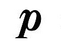
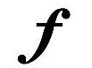
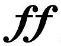
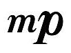

Dynamics tell you how loud or soft to play something. The fundamental dynamics are piano for soft and forte for loud.
Piano
Forte
You may also see those markings doubled for pianissimo(very soft) and fortissimo(very loud).
Pianissimo
Fortissimo
Finally, there are two dynamics between piano and forte: mezzo piano, which is moderately soft, and mezzo forte, which is moderately loud.
Mezzo Piano
Mezzo Forte